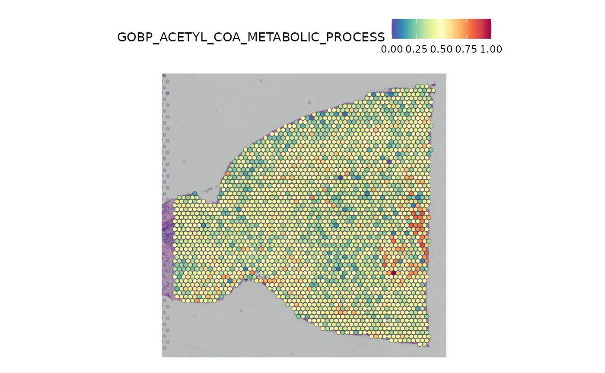
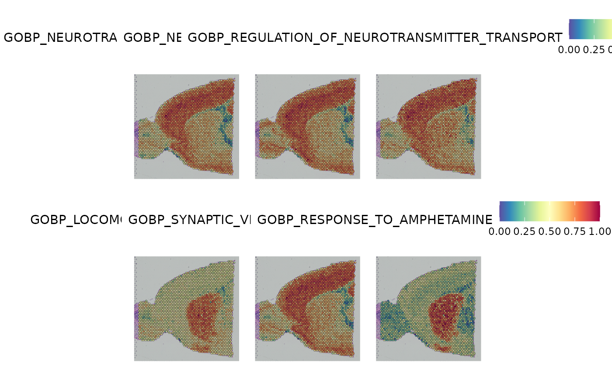

a07_gene_sets.RmdBecause singleCellHaystack makes few assumptions about
the properties of input data, it can be applied to any numerical data.
Here we used Seurat’s
AddModuleScore to calculated scores for sets of genes that share a
common function (based on GO annotations), and applied it to a spatial
transcriptomics dataset. For this example we use 10x Genomics Visium
platform brain data.
library(Seurat)
library(SeuratData)
library(singleCellHaystack)We focus on the 10x Genomics Visium anterior1 slice. This datasets contains 31,053 genes and 2,696 spots.
if (!"stxBrain" %in% SeuratData::InstalledData()[["Dataset"]]) {
SeuratData::InstallData("stxBrain")
}
anterior1 <- LoadData("stxBrain", type = "anterior1")
anterior1
#> An object of class Seurat
#> 31053 features across 2696 samples within 1 assay
#> Active assay: Spatial (31053 features, 0 variable features)
#> 1 image present: anterior1We used Seurat’s AddModuleScore function to calculate numerical values reflecting the average activity of sets of genes associated with common GO terms. We did this for 2,939 Biological Process GO terms that have between 20 and 250 genes in this anterior1 dataset. This calculation takes some time. Here we will use pre-calculated scores that we made available on figshare.
load(url("https://figshare.com/ndownloader/files/38105937"))
ls()
#> [1] "anterior1" "dat.scores"
dim(dat.scores)
#> [1] 2939 2696
dat.scores[1:3,1:3]
#> AAACAAGTATCTCCCA-1 AAACACCAATAACTGC-1
#> GOBP_ACETYL_COA_METABOLIC_PROCESS 0.5663 0.4681
#> GOBP_ACIDIC_AMINO_ACID_TRANSPORT 0.3746 0.8791
#> GOBP_ACID_SECRETION 0.4978 0.5679
#> AAACAGAGCGACTCCT-1
#> GOBP_ACETYL_COA_METABOLIC_PROCESS 0.4743
#> GOBP_ACIDIC_AMINO_ACID_TRANSPORT 0.3768
#> GOBP_ACID_SECRETION 0.4507We can add these module scores as meta data to the Seurat object, and visualize one of them as an example. Here we visualize the scores for the GO term “acetyl CoA metabolic process”.
anterior1 <- AddMetaData(anterior1,t(dat.scores), col.name = rownames(dat.scores))
SpatialFeaturePlot(anterior1, features = "GOBP_ACETYL_COA_METABOLIC_PROCESS")
haystack on the spatial coordinates
Next, we want to find biological processes that have a biased
activity within the tissue. For this, the two inputs to
singleCellHaystack are 1) the module score data and 2) the
spatial coordinates of the Visium spots. Please note that we are not
using an embedding as input space here, but the actual 2D coordinates of
spots inside the tissue. Since this Visium dataset only contains about
2.7k spots and we have scores for about 2.9k GO terms, running
singleCellHaystack should only take about a minute.
dat.coord <- GetTissueCoordinates(anterior1, "anterior1")
set.seed(123)
res <- haystack(x = dat.coord, expression = dat.scores)
#> ### calling haystack_continuous_highD()...
#> ### Using package sparseMatrixStats to speed up statistics in sparse matrices.
#> ### Calculating row-wise mean and SD...
#> ### Filtered 0 genes with zero variance...
#> ### Using 100 randomizations...
#> ### Using 100 genes to randomize...
#> ### scaling input data...
#> ### deciding grid points...
#> ### calculating Kullback-Leibler divergences...
#> ### performing randomizations...
#> ### estimating p-values...
#> ### picking model for mean D_KL...
#> ### using natural splines
#> ### best RMSD : 0.013
#> ### best df : 1
#> ### picking model for stdev D_KL...
#> ### using natural splines
#> ### best RMSD : 0.01
#> ### best df : 1
#> ### returning result...We can check the top GO processes with spatially biased score distributions.
show_result_haystack(res.haystack = res, n = 10)
#> D_KL log.p.vals log.p.adj
#> GOBP_NEUROTRANSMITTER_SECRETION 0.02094824 -116.1739 -112.7057
#> GOBP_NEUROTRANSMITTER_TRANSPORT 0.01724916 -115.0818 -111.6136
#> GOBP_REGULATION_OF_NEUROTRANSMITTER_TRANSPORT 0.01639296 -114.8745 -111.4063
#> GOBP_LOCOMOTORY_BEHAVIOR 0.02117002 -113.0179 -109.5497
#> GOBP_SYNAPTIC_VESICLE_EXOCYTOSIS 0.01941167 -112.9365 -109.4683
#> GOBP_RESPONSE_TO_AMPHETAMINE 0.06370640 -112.7320 -109.2638
#> GOBP_RESPONSE_TO_ISOQUINOLINE_ALKALOID 0.04415398 -112.5536 -109.0854
#> GOBP_REGULATION_OF_SYNAPTIC_PLASTICITY 0.01740920 -112.0729 -108.6047
#> GOBP_REGULATED_EXOCYTOSIS 0.01826615 -111.7330 -108.2648
#> GOBP_DENDRITE_DEVELOPMENT 0.01639215 -111.1884 -107.7202And we can visualize the distribution of scores for the 6 top-scoring GO terms in the spatial plot as an example.
top6 <- show_result_haystack(res.haystack = res, n = 6)
SpatialFeaturePlot(anterior1, features = rownames(top6))